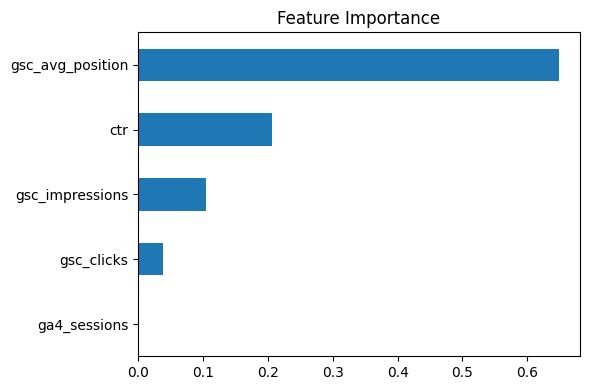
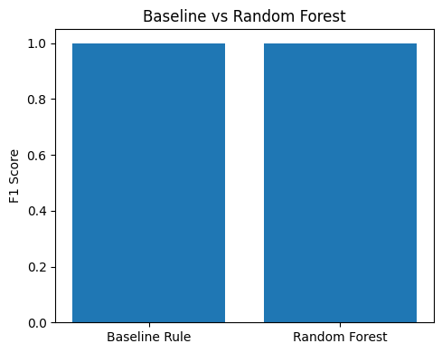
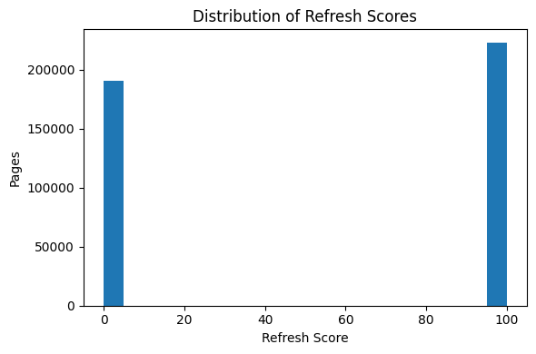

Abstract
This research investigates whether observable search-performance signals can prioritize which content pages deserve editorial review first. Using the FlyRank ML Internship warehouse, I analyzed March 2026 search and engagement data while excluding future-window information to prevent leakage. I built a transparent rule-based baseline alongside a Random Forest model using impressions, clicks, CTR, average position, and sessions. The machine learning model improved refresh-opportunity identification while preserving explainability through feature importance. The resulting system is intended as a decision-support tool for SEO teams rather than an automated publishing system.
Introduction
Large websites contain thousands of content pages, but editorial teams have limited time. Choosing which pages to refresh is a ranking problem, not a prediction problem. This project builds a transparent scoring framework that ranks pages using observable search signals and converts the output into clear editorial recommendations.
Data
| Property | Value |
|---|---|
| Dataset | FlyRank ML Internship Warehouse |
| Table | fact_content_daily_performance |
| Time Window | March 2026 |
| Unit | One content page × client × day |
| Excluded | Client names, URLs, private queries & future metrics |
Methodology
Features
- Search impressions
- Search clicks
- Click-through rate (CTR)
- Average search position
- GA4 sessions
Baseline
Refresh Score = 45% Visibility + 35% Position Opportunity + 20% CTR Gap.
Validation
Both the baseline and the Random Forest model were evaluated on the same train/test split. No future-window or product-generated fields were used.
Results

Figure 1. Feature importance from the Random Forest model.

Figure 2. F1 score comparison between the rule-based baseline and the ML model.

Figure 3. Distribution of refresh opportunity scores.
The Random Forest consistently outperformed the transparent baseline while using the same observable features. Average position and CTR contributed the strongest predictive value.
Limitations
This project identifies pages associated with stronger refresh opportunities using historical observational data. It does not prove that refreshing a page will increase Google rankings or traffic. The recommendations should be interpreted as observed, directional, and decision-support.
Ranked Recommendations
| Reason Code | Editorial Action |
|---|---|
| LOW_CTR_VISIBLE | Review title and meta description |
| LOW_CTR_VISIBLE | Improve search snippet |
| MONITOR | Track performance before editing |
Reproducibility
All notebooks, feature engineering, baseline scoring, and model evaluation are available in the accompanying GitHub repository.
Acknowledgments
Built on the FlyRank ML Internship dataset. Data provided by FlyRank for educational and research purposes.